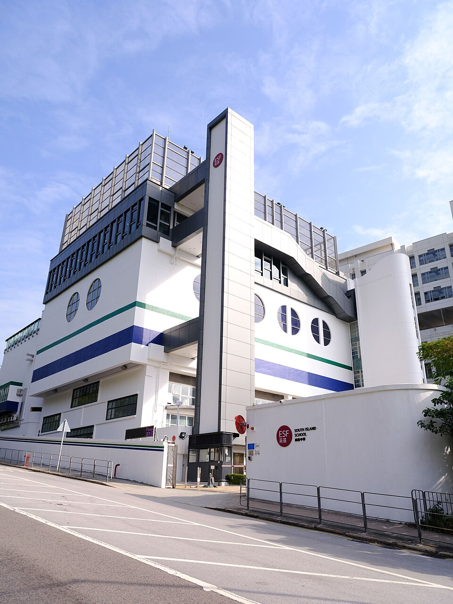

사우스 아일랜드 스쿨 남펑로드 캠퍼스 · 사진: Doma217 / Wikimedia Commons, CC BY-SA 4.0
사우스 아일랜드 스쿨(South Island School, 홍콩 ESF) — 1977년 분교로 시작한 학교, 그리고 학습 지원이 단계로 적히는 구조
⚠️ 이름 혼동 주의 — 홍콩에는 "아일랜드"가 들어가는 ESF 중등학교가 셋입니다. 사우스 아일랜드 스쿨(이 글, 애버딘 남펑로드) · 아일랜드 스쿨(미드레벨 보렛로드) · 웨스트 아일랜드 스쿨(포크풀람)은 서로 다른 학교입니다. 게다가 영문 약칭 SIS는 서울국제학교·셔코우 인터내셔널 스쿨(선전)과도 겹칩니다. 검색 결과를 읽기 전에 도시와 주소부터 보세요. ESF는 학교 이름이 아니라 재단 이름이라는 설명은 디스커버리 칼리지 글에 있습니다.
1. 어떤 학교인가 — 분교로 시작해 독립한 학교
사우스 아일랜드 스쿨은 1977년에 문을 연 것으로 알려진 ESF 소속 중등학교입니다. 특이한 것은 출발 형태입니다. 처음부터 독립된 학교로 세워진 것이 아니라 아일랜드 스쿨의 분교(annex) 성격으로 시작한 것으로 소개되고, 1983년에 애버딘 남펑로드 50번지의 현재 캠퍼스로 옮긴 것으로 전해집니다.
이 한 줄이 실용적으로 중요한 이유가 있습니다. 세 "아일랜드" 학교가 한국어 검색에서 유독 뒤섞이는 뿌리가 여기에 있기 때문입니다. 1970년대 말 자료에는 두 학교가 사실상 한 학교처럼 적혀 있고, 그 서술이 뒤의 글들로 옮겨 다닙니다. 학교를 고르실 때 주소를 먼저 확인하시라고 말씀드리는 것이 그래서입니다.
받는 학년은 Year 7부터 Year 13까지, 나이로는 만 11세에서 18세 무렵입니다. 초등 과정은 없습니다. 이 점은 같은 ESF의 아일랜드 스쿨·웨스트 아일랜드 스쿨과 같습니다.
교육과정은 세 구간으로 안내됩니다.
· Year 7~9 — IB MYP(중등 과정)
· Year 10~11 — GCSE·IGCSE, 일부 BTEC
· Year 12~13 — IB 디플로마(DP) · IB 커리어 관련 프로그램(CP) · BTEC
※ 학생 수·학비·연도별 시험 결과처럼 해마다 달라지는 수치는 이 글에 적지 않았습니다. 그해 개설 과목과 경로, 모집 일정은 학교 입학처에 직접 확인하세요.
2. 이 글의 핵심 — 지원이 "단계"로 적힌다는 뜻
한국에서 오신 학부모님이 가장 답답해하시는 대목은 "학교가 우리 아이를 챙겨 주고 있는지 아닌지를 알 수가 없다"는 점입니다. 담임 선생님은 괜찮다고 하는데 성적표는 그렇지 않고, 무엇을 더 요청해야 하는지도 모르겠다는 말씀을 자주 듣습니다.
ESF 학교들은 이 지점을 재단 공통의 틀로 처리하는 것으로 안내됩니다. 조정 단계(Levels of Adjustment)라고 부르며, 아이가 수업을 따라가는 데 필요한 지원의 양과 종류를 1단계부터 6단계까지로 구분해 기록합니다. 그리고 모든 ESF 학교가 최소한 2단계 수준의 지원을 갖추고 있는 것으로 소개됩니다.
이 구조가 가정에 주는 실익은 두 가지입니다.
· ① 질문이 구체해집니다. "잘 봐 주세요"가 아니라 "지금 우리 아이에게 어떤 조정이 문서로 적혀 있나요"라고 물을 수 있습니다.
· ② 학교를 옮겨도 이어집니다. 같은 재단 안에서는 같은 용어로 기록되므로, 다른 ESF 학교로 가도 처음부터 다시 설명하지 않아도 됩니다.
⚠️ 가장 자주 생기는 오해 — "우리 아이는 한국에서 왔으니 당연히 학습 지원 대상"이라고 생각하고 가시면 어긋납니다. 많은 국제학교 정책이 모국어가 영어가 아니라는 이유만으로는 학습 지원 대상이 아니다라고 명시합니다. 영어가 아직 익지 않은 아이에게 제공되는 것은 영어 지원(EAL) 쪽이고, 학습 지원은 그와 다른 범주입니다. 두 가지의 차이는 Learning Support(학습 지원) 안내와 EAL 안내에 정리해 두었습니다. 단계 구분과 제공 범위는 해마다 달라질 수 있으니 입학처 확인이 반드시 필요합니다.
3. 한국(주재원) 학생이 겪는 어려움 — 7년 동안 채점 방식이 두 번 바뀝니다
| 구간 | 평가 방식 | 한국 학생이 막히는 곳 |
|---|---|---|
| Year 7~9 (MYP) | 기준표(criteria)로 채점 | 답은 맞는데 근거를 쓰지 않아 점수가 깎입니다 |
| Year 10~11 (IGCSE·BTEC) | 2년 코스 — 시험형과 과제형이 섞임 | 중간 합류가 가장 어렵습니다 — 코스가 이미 절반 진행 |
| Year 12~13 (DP·CP·BTEC) | 경로마다 평가 비중이 다름 | 기한이 긴 과제를 스스로 관리해야 합니다 |
그리고 이 학교에는 구간과 별개로 하나가 더 있습니다. 초등 과정이 없으니 입학의 기본 시작점이 Year 7 하나라는 점입니다. 그 위로는 전부 편입이고, 자리가 나야 들어갑니다. 더구나 ESF는 지원 기간과 우선순위 범주가 정해져 있어, 주재원 가정에서는 발령 통보보다 지원 일정이 먼저 오는 일이 자주 생깁니다. 이 구조는 아일랜드 스쿨 글에서 더 자세히 다뤘습니다.
4. 그래서 이렇게 준비합니다 — 그리고 애버딘이라는 조건
· ① 지원 일정을 발령보다 먼저 확인합니다. "가게 될 것 같다" 단계에서 그해 모집 기간을 묻는 편이 안전합니다.
· ② Year 7 진입 전 1년에 영어 글쓰기를 손봅니다. 기준표 채점은 근거를 들어 설명하는 문단을 요구합니다. 회화가 아니라 쓰기입니다.
· ③ 지원이 필요할 것 같다면 입학 상담에서 문서로 물어 둡니다. "어떤 조정이 가능한지", "그 기록은 어떻게 남는지" 두 가지입니다. → 학습 지원 안내
· ④ 수학은 풀이 과정을 영어로 쓰는 연습을 합니다. 답만 적으면 점수가 나오지 않습니다.
· ⑤ 통학을 먼저 계산하세요. 애버딘·남펑로드는 홍콩섬 남쪽이라 거주지에 따라 통학 부담이 크게 갈립니다. → 통학·스쿨버스
📌 홍콩은 한국과 시차가 1시간입니다. 한국 저녁 9시가 홍콩 저녁 8시라, 화상 수업을 평일 저녁에 잡기 가장 쉬운 도시 중 하나입니다. 과제가 몰리는 학기에는 마감 전날이 아니라 과제를 받은 주에 한 번 붙이는 방식이 효율이 좋습니다. → 숙제·과제 관리
홍콩 안의 다른 선택지와 견주어 보실 분들을 위해 덧붙이면, 아일랜드 스쿨·웨스트 아일랜드 스쿨(같은 ESF 중등)·디스커버리 칼리지(ESF·IB 전 과정)·HKIS(미국식 AP)·CIS·CDNIS·해로 홍콩·YCIS 글이 각각 다른 축으로 정리돼 있습니다. 홍콩 전체 그림은 홍콩 국제학교 과외 안내에서 보실 수 있습니다.
관련 검색어: 홍콩사우스아일랜드스쿨 · 사우스아일랜드스쿨수학과외 · 사우스아일랜드스쿨영어과외 · ESF사우스아일랜드 · 홍콩국제학교영어과외
정리
사우스 아일랜드 스쿨은 1977년 아일랜드 스쿨의 분교로 출발한 것으로 알려진 ESF 중등학교이고, 1983년부터 애버딘 남펑로드에서 Year 7~13을 운영합니다. 이름이 비슷한 두 학교와는 다른 학교이며, 출발 이력 때문에 옛 글에서 더 섞입니다. 공부 쪽에서 눈여겨보실 것은 지원이 재단 공통 단계로 문서화된다는 점, 그리고 그 지원이 영어 지원(EAL)과는 다른 범주라는 점입니다. 지금 아이가 Year 7인지 Year 10인지에 따라 할 일이 전혀 다르니, 30분 무료 수업으로 현재 위치부터 확인해 보시기 바랍니다. (학년 구성·과정 운영·지원 범위는 바뀔 수 있으니 반드시 학교 요강을 직접 확인하세요.)